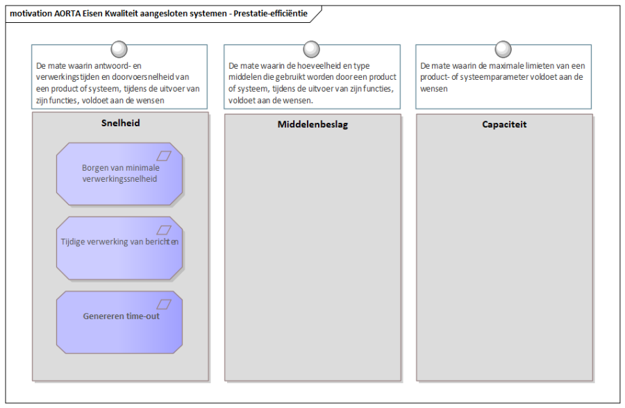
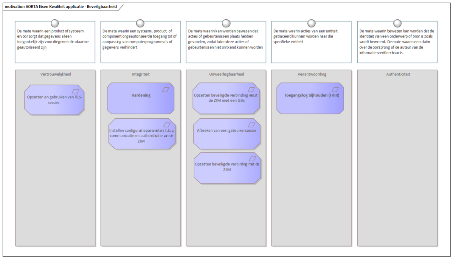
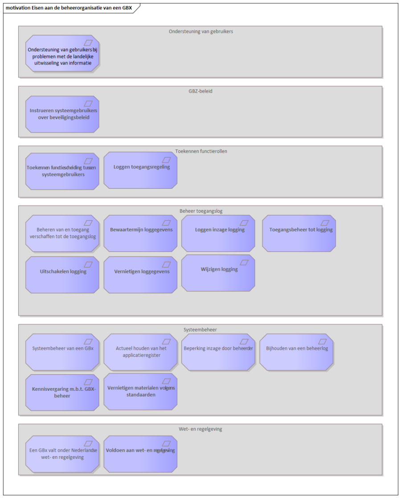
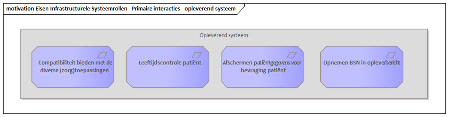
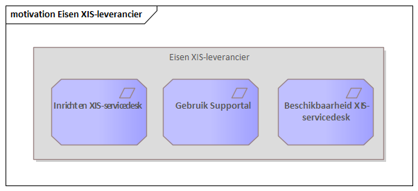
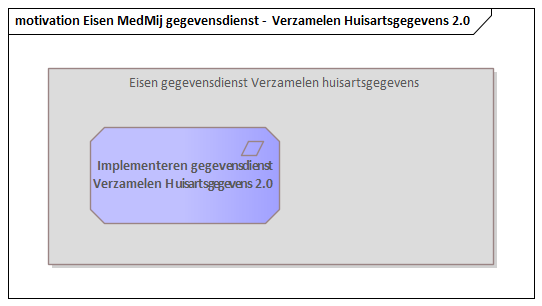

AORTA 8.5.2 / Zorgtoepassingen / MedMij / MedMij Bronsysteem
PvE Bronsysteem tbv MedMij
| Datum: 15 juni 2022 ; |
|---|
| Status: Definitief ; |
| Versie: ; |
| Classificatie: Openbaar ; |
| Revisie: 1.0 ; |
Documenthistorie
Documentversies
| Datum ; | Status ; | Versie ; | Omschrijving ; |
|---|---|---|---|
| 15 juni 2022 ; | Definitief ; | Eerste opzet PvE Bronsysteem tbv MedMij ; | |
Inhoudsopgave
Documenthistorie
1 Inleiding
1.1 Doelgroep voor dit document
1.2 Doel en scope
2 Diagrammen Kwaliteitseisen
2.1 AORTA Eisen Kwaliteit aangesloten systemen
2.1.1 Tijdige verwerking van berichten
2.1.2 Genereren time-out
2.1.3 Borgen van minimale verwerkingssnelheid
2.1.4 Borgen van de beschikbaarheid van een GBx
2.1.5 Minimaliseren van de impact van gepland onderhoud
2.1.6 Borgen van de betrouwbaarheid bij kleine storingen
2.1.7 Borgen van de betrouwbaarheid bij grote storingen
2.1.8 Beveiliging van patiëntgegevens in het GBx
2.1.9 Borgen van plicht tot uitwisselen van patiëntgegevens
2.1.10 Een GBx beschikt over een geldig UZI/PKIO-servercertificaat
2.1.11 Beveiligde opslag
2.1.12 Communicatie met het LSP via een GZN
2.1.13 Gebruik van IP en DNS
2.1.14 Tijdsynchronisatie GBx en ZIM
2.1.15 Aansluiting op productie-omgeving LSP
2.2 AORTA Eisen Kwaliteit applicatie
2.2.1 Afbreken van een gebruikerssessie
2.2.2 Opzetten beveiligde verbinding met de ZIM
2.2.3 Instellen configuratieparameters t.b.v. communicatie en authenticatie van de ZIM
2.2.4 Opzetten en gebruiken van TLS-sessies
2.2.5 Opzetten beveiligde verbinding vanuit de ZIM met een GBx
2.2.6 Hardening
2.2.7 Toegangslog bijhouden (FHIR)
2.2.8 Onderscheiden van fictieve gegevens
2.2.9 Ondersteunen servercertificaten en ondertekeningalgoritmen
2.2.10 Kenbaar maken Certificate Authorities
2.2.11 Afhandelen transactietoken
2.2.12 Protocolstack voor gegevensuitwisseling o.b.v. FHIR
2.3 Eisen aan de beheerorganisatie van een GBX
2.3.1 Ondersteuning van gebruikers bij problemen met de landelijke uitwisseling van informatie
2.3.2 Instrueren systeemgebruikers over beveiligingsbeleid
2.3.3 Toekennen functiescheiding tussen systeemgebruikers
2.3.4 Beheren van en toegang verschaffen tot de toegangslog
2.3.5 Systeembeheer van een GBx
2.3.6 Actueel houden van het applicatieregister
2.3.7 Beperking inzage door beheerder
2.3.8 Bijhouden van een beheerlog
2.3.9 Kennisvergaring m.b.t. GBX-beheer
2.3.10 Een GBx valt onder Nederlandse wet- en regelgeving
2.3.11 Vernietigen materialen volgens standaarden
2.3.12 Voldoen aan wet- en regelgeving
2.3.13 Loggen toegangsregeling
2.3.14 Bewaartermijn loggegevens
2.3.15 Loggen inzage logging
2.3.16 Uitschakelen logging
2.3.17 Vernietigen loggegevens
2.3.18 Wijzigen logging
2.3.19 Toegangsbeheer tot logging
2.4 Eisen Infrastructurele Systeemrollen
2.4.1 Afschermen patiëntgegevens voor bevraging patiënt
2.4.2 Compatibiliteit bieden met de diverse (zorg)toepassingen
2.4.3 Leeftijdscontrole patiënt
2.4.4 Opnemen BSN in opleverbericht
2.4.5 Wijzigen TKID applicatie o.b.v. FHIR
2.4.6 Bevestigen applicatiekoppeling o.b.v. FHIR
2.4.7 Verwerken geboortedatums waarin nullen zijn opgenomen
2.4.8 Voorlopig koppelen van patiëntgegevens aan een BSN
2.4.9 Definitief koppelen van patiëntgegevens aan een BSN
2.4.10 Controleren geldigheid van een WID
2.4.11 Opzoeken en tonen patiëntgegevens
2.4.12 Gebruik van geverifieerde BSN's
2.5 Eisen XIS-leverancier
2.5.1 Beschikbaarheid XIS-servicedesk
2.5.2 Inrichten XIS-servicedesk
2.5.3 Gebruik Supportal
2.6 Eisen specifieke gegevensdienst
2.6.1 Implementeren gegevensdienst Verzamelen Huisartsgegevens 2.0
2.6.2 Implementeren gegevensdienst Verzamelen Medicatiegegevens 9.0
2.6.3 Implementeren gegevensdienst Verzamelen Medicatiegerelateerde Overgevoeligheden 2.A
2.6.4 Implementeren gegevensdienst Verzamelen Basisgegevens GGZ 2.0
2.6.5 Implementeren gegevensdienst Verzamelen Basisgegevens zorg 3.0
2.6.6 Implementeren gegevensdienst Delen antwoorden op vragenlijsten 2.0
2.6.7 Implementeren Ontvankelijkheidstoets
2.6.8 Controleren behandelrelatie
2.6.9 Bijhouden behandelrelatie
2.6.10 Implementeren gegevensdienst Delen Meetwaarden vitale functies 2.0
2.6.11 Implementeren gegevensdienst Verzamelen Afspraken 2.0
2.6.12 Implementeren gegevensdienst Verzamelen Documenten 3.0
2.6.13 Implementeren gegevensdienst Meetwaarden vitale functies 2.0
2.6.14 Implementeren gegevensdienst Verzamelen verwijzingen naar vragenlijsten 2.0
Inleiding
Dit programma van eisen gaat over de toepassing bronsysteem t.b.v. MedMij. Het PvE Bronsysteem t.b.v. MedMij betreft een document waarin eisen zijn opgenomen waaraan een GBZ moet voldoen om aangesloten te worden op de AORTA-infrastructuur.
Doelgroep voor dit document
De doelgroep voor dit document bestaat uit diverse rollen aan de kant van de XIS-leverancier en de GBx beheerorganisatie. Het gaat hierbij om o.a. architecten, software ontwikkelaars, productmanagers, testers en systeembeheerders. Tevens is dit document bedoeld voor diverse rollen binnen VZVZ. Het gaat hierbij o.a. om architecten, productmanagers, testers, demandmanagers en ketenregie.
Doel en scope
Het doel van dit document is om de eisen te beschrijven waaraan moet worden voldaan om een GBZ als bronsysteem t.b.v. MedMij aan te sluiten op de AORTA-infrastructuur. De hierin opgenomen hoofdstukken gelden voor alle bronsystemen ongeacht de gegevensdienst waarvoor zij gegevens beschikbaar stellen. Paragraaf 1.6 bevat per gegevensdienst de specifieke eisen voor die gegevensdienst. Deze zijn alleen van toepassing indien de betreffende XIS ook daadwerkelijk gegevens beschikbaar wil stellen t.b.v. die gegevensdienst.
Section: Section1
Diagrammen Kwaliteitseisen
AORTA Eisen Kwaliteit aangesloten systemen

Figure 1 : AORTA Eisen Kwaliteit aangesloten systemen - Prestatie-efficiëntie
Tijdige verwerking van berichten
Genereren time-out
Borgen van minimale verwerkingssnelheid
Borgen van de beschikbaarheid van een GBx
Minimaliseren van de impact van gepland onderhoud
Borgen van de betrouwbaarheid bij kleine storingen
Borgen van de betrouwbaarheid bij grote storingen
Beveiliging van patiëntgegevens in het GBx
Borgen van plicht tot uitwisselen van patiëntgegevens
Een GBx beschikt over een geldig UZI/PKIO-servercertificaat
Beveiligde opslag
Communicatie met het LSP via een GZN
Gebruik van IP en DNS
Tijdsynchronisatie GBx en ZIM
Aansluiting op productie-omgeving LSP
AORTA Eisen Kwaliteit applicatie

Figure 5 : AORTA Eisen Kwaliteit applicatie - Beveiligbaarheid
ISO 25010 definitieert Beveiligbaarheid als: De mate waarin een product of systeem informatie en gegevens beschermt zodat personen, andere producten of systemen de juiste mate van gegevenstoegang hebben passend bij hun soort en niveau van autorisatie.
Afbreken van een gebruikerssessie
Opzetten beveiligde verbinding met de ZIM
Instellen configuratieparameters t.b.v. communicatie en authenticatie van de ZIM
Opzetten en gebruiken van TLS-sessies
Opzetten beveiligde verbinding vanuit de ZIM met een GBx
Hardening
Toegangslog bijhouden (FHIR)
Onderscheiden van fictieve gegevens
Ondersteunen servercertificaten en ondertekeningalgoritmen
Kenbaar maken Certificate Authorities
Afhandelen transactietoken
Protocolstack voor gegevensuitwisseling o.b.v. FHIR
Eisen aan de beheerorganisatie van een GBX

Figure 8 : Eisen aan de beheerorganisatie van een GBX
Ondersteuning van gebruikers bij problemen met de landelijke uitwisseling van informatie
Instrueren systeemgebruikers over beveiligingsbeleid
Toekennen functiescheiding tussen systeemgebruikers
Beheren van en toegang verschaffen tot de toegangslog
Systeembeheer van een GBx
Actueel houden van het applicatieregister
Beperking inzage door beheerder
Bijhouden van een beheerlog
Kennisvergaring m.b.t. GBX-beheer
Een GBx valt onder Nederlandse wet- en regelgeving
Vernietigen materialen volgens standaarden
Voldoen aan wet- en regelgeving
Loggen toegangsregeling
Bewaartermijn loggegevens
Loggen inzage logging
Uitschakelen logging
Vernietigen loggegevens
Wijzigen logging
Toegangsbeheer tot logging
Eisen Infrastructurele Systeemrollen

Figure 9 : Eisen Infrastructurele Systeemrollen - Primaire interacties - opleverend systeem
Afschermen patiëntgegevens voor bevraging patiënt
Compatibiliteit bieden met de diverse (zorg)toepassingen
Leeftijdscontrole patiënt
Opnemen BSN in opleverbericht
Wijzigen TKID applicatie o.b.v. FHIR
Bevestigen applicatiekoppeling o.b.v. FHIR
Verwerken geboortedatums waarin nullen zijn opgenomen
Voorlopig koppelen van patiëntgegevens aan een BSN
Definitief koppelen van patiëntgegevens aan een BSN
Controleren geldigheid van een WID
Opzoeken en tonen patiëntgegevens
Gebruik van geverifieerde BSN's
Eisen XIS-leverancier

Figure 12 : Eisen XIS-leverancier
Beschikbaarheid XIS-servicedesk
Inrichten XIS-servicedesk
Gebruik Supportal
Eisen specifieke gegevensdienst

Figure 13 : Eisen MedMij gegevensdienst - Verzamelen Huisartsgegevens 2.0